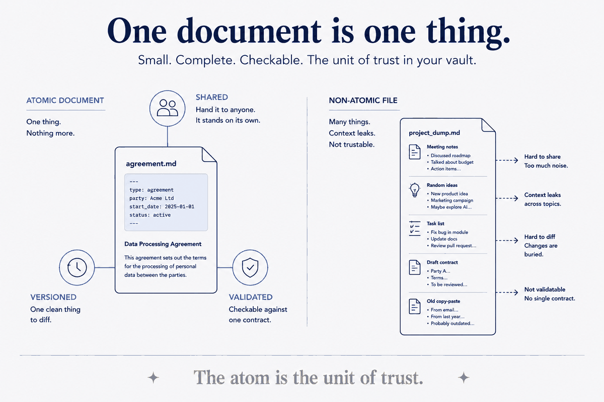

One document is one thing — the indivisible unit you can share, version, validate and link without tearing it apart.

One document is one thing — the indivisible unit of the system.
A document holds exactly one idea, capture, or record — not a folder's worth of loosely-related notes crammed into one file. Atomicity is what makes everything else possible: an atomic document can be shared, versioned, validated, moved and linked as a whole, because it means one clean thing. This is the ground rule under Capture types (each capture is atomic and typed) and under Federated brains (you can only send a document across a boundary safely if it's a self-contained unit — a non-atomic file leaks unrelated context or can't be validated against one contract). Small, single-purpose, self-describing: the atom is the unit of trust.
The picture: atomic documents are brain cells. Each atomic document is a neuron — one thing, indivisible, holding a memory. The loosely-coupled frontmatter links are the synapses that wire them together; the vault is the brain those cells make up; and Federated brains is many brains talking through synapses at the boundary. It's why the whole family of concepts is named for a brain rather than a database — a database stores rows, but a brain remembers, connects, and grows. Same structure; a picture that stays.